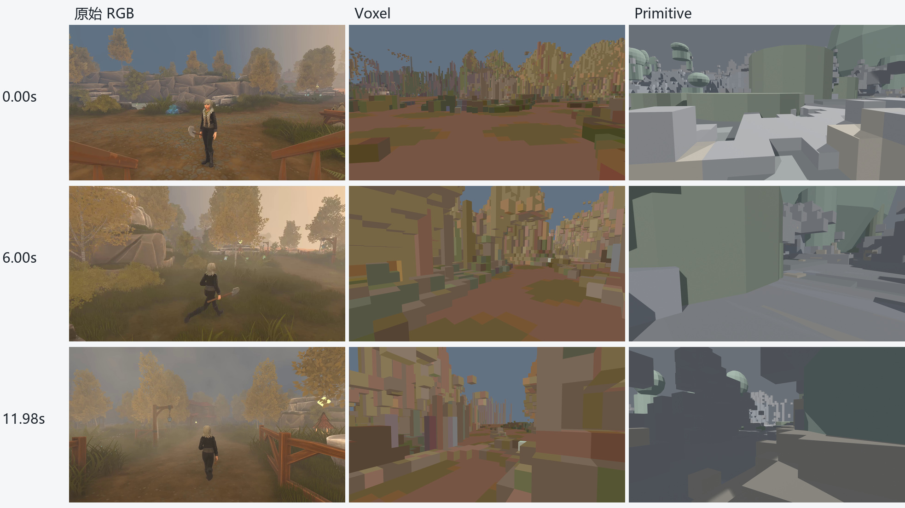
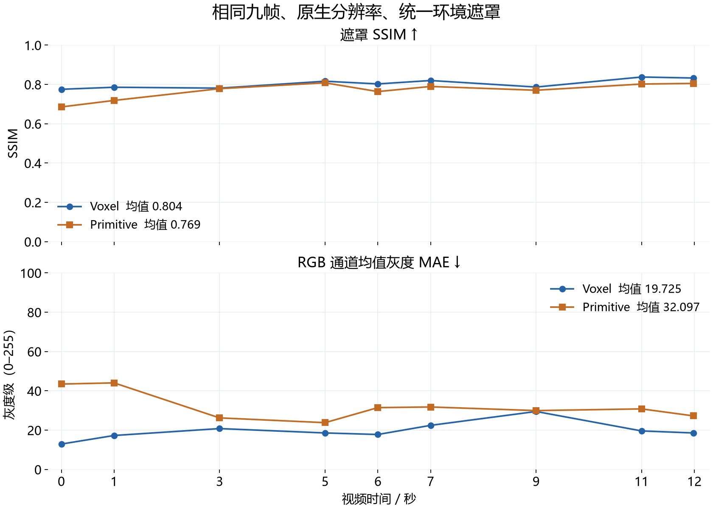
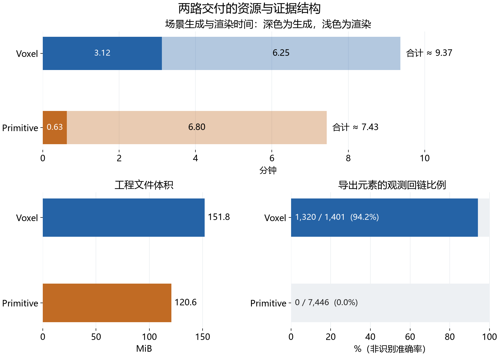

游戏影像驱动的三维粗模重建
面向 10–15 秒游戏录屏，构建语义理解、几何代理、场景生成与质量验证工作流。本项目提供三条路线：Voxel 侧重环境覆盖与镜头可用性；Primitive 侧重类别到基本体的结构化映射与编辑性；ComfyUI + H3 侧重原视频的生成式灰模风格化。
当前三路均交付 12 秒视频。前两路输出可编辑 Blender 工程，采用启发式几何与推断相机，不包含角色动作代理；第三路直接生成灰模风格视频，包含人物的生成式近似，但不重建三维场景，也不输出 .blend、角色轨迹或可验证的几何。
1. 实验设置与交付
数据来自 Origin Lab Game Recordings v4，Session 66ad9535-583f-4a25-b655-6b1697c83a40 的 [0, 12) 秒：1920×1080、60 FPS、720 帧。元数据记录 UE5、地图 Island，未提供明确游戏名称。数据准备采用有界前缀下载，不下载完整 Session 或整库。
三路使用同一原片。Voxel / Primitive 共享 RGB/深度码、61 帧 Grounding DINO + SAM 分割缓存、相机校准与 720 帧轨迹，渲染均采用 Blender 5.2.1 LTS / EEVEE；H3 只从原片 RGB 提取轮廓控制，不读取前两路的几何、遮罩或相机结果，在本地 ComfyUI 0.46.0 中生成视频。因此属于同源方案比较，而非单变量消融实验；后文现有 SSIM / MAE 图表仍只比较前两路。
| 交付物 | Voxel：彩色体素 | Primitive：分类基本体 | H3：生成式灰模视频 |
|---|---|---|---|
| 原片 / 粗模对比 | original_vs_blockout.mp4 | original_vs_blockout.mp4 | comparison.mp4 |
| 纯粗模视频 | blockout_video.mp4 | blockout_video.mp4 | graybox.mp4 |
| 可编辑场景 | scene.blend | scene.blend | 无；交付可编辑节点图，不是三维场景 |
| 原始验证记录 | proxy_run.json | primitive_run.json | report.json |
Voxel 对比视频
左侧为原始录屏，右侧为彩色体素粗模。
Primitive 对比视频
左侧为原始录屏，右侧为分类基本体粗模。
ComfyUI + H3 对比视频
左侧为原始录屏，右侧为生成式灰白粗模。纯灰模片为 1920×1080，对比片为 1536×432；两者均为 60 FPS、720 帧、12 秒。模型原生生成尺寸为 768×432，1080p 交付是空间放大，不是原生 1080p 推理。
GitHub README 及其他不支持上述内嵌播放器的 Markdown 阅读器可使用交付表中的 MP4 链接。同一份内容发布在 GitHub Pages，页面中的对比视频可以直接播放。六份展示视频副本位于未被 Git 忽略的 docs/videos/，原始输出仍保留在 outputs/，供脚本复现和验证使用。
以下按相同源帧索引展示原始 RGB、Voxel、Primitive 与 H3（生成式灰模）；行时间分别为 0、6、11.983 秒。H3 从完整成片 full_v3/graybox.mp4 按源索引映射抽帧，同一索引不代表生成内容与原片严格一致。

当前前两路均有物体合并、位置偏差和细节缺失；Primitive 近景仍有大体积遮挡，人物、斧头、木牌及雾效未重建。H3 可能改写人物、植被与场景布局，4.3333 秒和 8.3 秒接段处有可见跳变。媒体使用权限见文末。
2. 工作流与分支
前两路由编排器负责阶段状态、工具执行、缓存、失败记录与质量检查。视觉模型生成预测类别与遮罩；数值模块生成几何；Scene JSON 约束单位、时间、来源和对象结构；Blender 后台创建场景、保存重开并渲染。第三路由独立脚本准备控制视频、提交 ComfyUI 任务、收集结果和拼接验帧。当前均采用规则式编排，未实现 LLM 自主规划或几何修复循环。
flowchart LR
A[RGB / 深度码 / 遥测] --> B[数据准备与同步]
B --> C[本地分割缓存与 RGB 相机校准]
C --> V[体素融合与启发式补齐]
C --> P[采样观测点与类别基本体拟合]
V --> VQ[覆盖 / 穿模 / 预览检查]
P --> PQ[几何过滤 / 灰度误差检查]
VQ --> E[Scene JSON / Blender 场景]
PQ --> E
E --> F[保存重开 / 逐帧渲染 / MP4 验证]
F --> Q[两路统一离线比较]
B --> H[连续 RGB 帧 / 模糊 Canny 轮廓]
H --> HC[本地 H3 / ControlNet / 分段参考]
HC --> HV[去重叠 / 去填充 / 精确 PTS / 视频审核]
Voxel 入口为 reconstruction.heuristic_proxy；本次 Primitive 入口为 reconstruction.primitive_blockout，直接读取视频观测，不读取 Voxel 补齐后的占用结果。历史目录 heuristic_primitive_proxy/ 为体素派生灰模基线，不属于本次两路比较。
三条路线分别怎么做
- Voxel：将 RGB、深度码和预测类别反投影到共同坐标系，按独立帧投票融合体素，再启发式补齐地面与环境体积、清出相机走廊；导出分区网格和 Scene JSON，由 Blender 保存重开、预览并渲染完整时间轴。
- Primitive：直接采样原视频的语义观测点，按类别拟合方块、圆柱与球体，过滤近相机的大体积候选并生成部分树干—树冠关系；输出独立可编辑元素，通过灰度预览检查后由 Blender 渲染。
- ComfyUI + H3：连续源帧缩小到 768×432，做 Gaussian 模糊（σ=3）和 Canny（12/30），抑制植被碎细节并保留主体轮廓；用灰白无纹理基本体提示词、H3 FL2VA、Fun ControlNet Union 2.0（强度 1.0）及 8-step Turbo LoRA 生成视频，再由脚本拼接、放大并验帧。
ComfyUI + H3 工作流与三段示意
实线表示本段源视频的 Canny 控制与结果流向，虚线表示上一段生成帧的参考条件；三段共享模型和灰模文本设置，按顺序生成。
flowchart TB
RGB["原片 RGB：720 帧 / 60 FPS"] --> C["缩小到 768×432<br/>Gaussian 模糊 + Canny 轮廓"]
subgraph GEN["ComfyUI 本地生成：H3 + Union 2.0 + 8-step LoRA<br/>共享灰模提示词、Qwen 编码器与视频 VAE"]
direction LR
H0["第一段：260 帧<br/>full_0_v3"]
H1["第二段：260 帧<br/>full_1_v3_retry"]
H2["第三段：260 帧<br/>full_2_v3"]
H0 -. "末尾 22 帧经 AddGuide" .-> H1
H1 -. "末尾 22 帧经 AddGuide" .-> H2
end
C -->|源帧 0–259| H0
C -->|源帧 238–497| H1
C -->|源帧 476–719 + 16 帧填充| H2
H0 --> K0["保留源帧 0–259"]
H1 --> K1["丢弃 22 帧重叠<br/>保留源帧 260–497"]
H2 --> K2["丢弃 22 帧重叠及 16 帧填充<br/>保留源帧 498–719"]
K0 --> JOIN["按源索引拼接：720 帧"]
K1 --> JOIN
K2 --> JOIN
JOIN --> OUT["精确 PTS i/60<br/>1080p 灰模片 + 原片对比片"]
OUT --> CHECK["回读帧数、FPS、PTS 与源索引<br/>人工审核人物、布局与接段跳变"]
主支路为 LoadVideo → GetVideoComponents → MiniMaxH3FunControlNetApply → SamplerCustomAdvanced → VAEDecode → CreateVideo → SaveVideo；MiniMaxH3ImageToVideo 配合 Qwen 编码器和视频 VAE 提供文本条件及视频 latent。全部使用原生节点。
当时考虑到本机 12 GiB 显存和长序列推理风险，沿用了已跑通的每段 260 帧方案（满足 H3 的 17n+5 帧网格）；这不是模型的硬性要求，单段整片尚未实测。相邻段重叠 22 帧，两段只能覆盖 498 帧，因此采用三段覆盖 736 帧，再去掉末尾 16 个填充帧，保留完整的 720 帧。
后两段将上一段末尾 22 个生成帧送入 MiniMaxH3AddGuide，作为开头参考；本段仍使用源视频的 Canny 控制。
| 段 | 实际可导入工作流 | 控制源帧 / 填充 | 最终保留源帧 | 前段参考 |
|---|---|---|---|---|
| 第一段 | full_0_v3 | 0–259 | 0–259 | 无 |
| 第二段（修复后成功版本） | full_1_v3_retry | 238–497 | 260–497 | 第一段末尾 22 帧 |
| 第三段 | full_2_v3 | 476–719，另加 16 个尾部控制填充帧 | 498–719 | 第二段末尾 22 帧 |
三份文件已保存在 ComfyUI 的 user/default/workflows/，可在左侧“工作流”列表打开；仓库中的 JSON 也可拖入画布。full_1_v3 是失败留档，不应替代第二段的 full_1_v3_retry。
下图从左到右为第一段、第二段成功重试、第三段的实际节点截图；后两段下方是参考视频、尺寸补齐和 AddGuide 支路。节点细节以表中的 JSON 为准，结果以各段 history.json 和最终报告为准。

原生主 latent 会内部补齐网格，参考 latent 不会；第二段首次执行因此报尺寸错误。修复只用 ImagePadForOutpaint 在参考底部补 16 像素，以及 EmptyMiniMaxH3LatentAV 的 768×448 参考尺寸，主画布和 Canny 控制仍为 768×432，没有改 ComfyUI 核心。失败原因与修复见 full_failures.json。
拼接保留前段重叠区域，丢弃后段重复帧和尾部填充帧，不混合、不插帧。
严格米制路径 A → B → C → D → E → F → G 已通过合成端到端验证，并提供 reviewed 输入接口。本次真实 Session 因深度逆公式、单位、像素采样和渲染姿态绑定未确认，在 A 返回阻塞，B–F 跳过，G 生成 partial 报告。三条独立入口及本节离线比较尚未接入统一 A–G CLI，不绕过上述阻塞；H3 不参与三维几何验收。
3. 表达方式与技术差异
| 路线 | 核心表达 | 可编辑交付 | 适合用途 |
|---|---|---|---|
| Voxel | 带类别与颜色的空间占用 | Blender 分区网格 / 相机 | 环境覆盖、镜头通道、空间草稿 |
| Primitive | 类别驱动的基本体拟合 | Blender 独立元素 / 部分父子关系 | 局部布局调整、类别到结构的检查 |
| H3 | 轮廓和文本软引导的生成像素 | ComfyUI 节点与参数；无三维对象 | 灰模风格动态预演，不要求精确几何的视觉沟通 |
以下仅比较前两路的几何表达。
| 维度 | Voxel | Primitive |
|---|---|---|
| 几何单元 | 0.5 场景单位体素；跨类别剔除内部面，按空间区块导出网格 | 从采样观测点拟合方块、圆柱、球体；保留独立可编辑元素 |
| 几何先验 | 补齐连续地面、环境柱状体积，预留相机自由走廊 | 不执行全局地面补齐或柱体填充；地面分块、树干/树冠及实心区间采用类别规则 |
| 语义表达 | 类别附着于体素及网格区块，侧重空间占用与粗轮廓 | 类别显式关联基本体类型、尺寸与部分父子关系 |
| 观测累计 | 每帧对独立体素投票，至少两个训练帧支持后进入融合；补齐几何另行标注 | 当前 min_votes 按采样点数累计，不能等同于两个独立帧支持 |
| 对象标识 | 1,401 个空间/类别区块；不代表 1,401 个真实物体 | 7,446 个拟合元素：7,310 方块、90 圆柱、46 球体；不代表真实实例数 |
| 主要风险 | 补齐先验可能掩盖观测缺失；高覆盖不保证布局正确 | 形状先验可能替代真实轮廓；细碎元素和近景体积影响可读性 |
两路均以推断地面锚定深度码的远近关系，工程虽使用米制设置，真实尺寸尚未认证。两路 object_id 均为生成元素标识，不能作为跨帧真实实例身份验证。
4. 场景理解能力的验证差异
两路共享视觉模型与预测缓存，比较结果不能用于判断 Grounding DINO / SAM 的识别能力差异。验证应区分视觉识别、语义到几何转换、证据可追溯性及空间可用性。
| 验证层 | Voxel 的可检查内容 | Primitive 的可检查内容 | 当前证据边界 |
|---|---|---|---|
| 视觉识别 | 预测类别在空间占用中的分布 | 相同预测类别对应的拟合元素 | 模型与缓存相同；无独立实例标注，P/R、Mask IoU 未验收 |
| 语义 → 几何 | 环境体积、粗轮廓、道路/树墙与镜头关系 | 类别—基本体映射、尺寸、树干—树冠分解及父子关系 | Primitive 的表达更显式，但规则映射本身不是识别正确性的证明 |
| 观测回链 | 1,320 / 1,401 区块包含代表观测，共 1,320 条记录 | 0 / 7,446 元素包含逐对象观测；保留全局输入哈希 | Voxel 记录为单帧推断关联，非实例真值；Primitive 为导出回链缺失，非原始观测缺失 |
| 结构关系 | 当前无父子关系 | 46 条树干—树冠父子关系 | 属于拟合规则输出，尚未通过独立结构标注验证 |
| 时序理解 | 静态环境与固定时间轴 | 静态基本体与固定时间轴 | 均未验证角色轨迹、动作事件、遮挡期间身份保持 |
因此，Voxel 更适合验证空间覆盖与镜头通道，Primitive 更适合暴露语义到结构化几何的转换错误。当前数据不足以得出任一路径“场景理解准确率更高”的结论。
后续独立验收应采用未参与拟合的实例与事件标注：类别/Mask P/R 与 IoU、对象投影位置与尺寸、部件关系、遮挡顺序、角色身份和动作时刻。最终网格的几何精度应独立于点云评价；不能将源预测遮罩或其投影回链作为真值。
H3 的 Qwen 编码器仅提供生成条件，不输出实例识别、持久 ID 或 Scene JSON；人物外观和运动近似不能作为场景理解或动作识别通过的证据。
5. 统一视觉比较与质量门槛
前两路统一映射为 源帧 i → 视频时间 i/60 秒 → Blender 帧 i+1，i=0..719；末帧 PTS 为 11.9833 秒，总时长 12 秒。该映射验证时序一致性，不证明推断相机或角色动作准确。
本次重新计算相同九帧：0, 60, 180, 300, 360, 420, 540, 660, 719。两路使用同一原生 RGB 和环境遮罩 0 < codes10 < 1020 且预测类别 ≠ person；以下均值为九帧指标的算术平均。

| 统一指标 | Voxel | Primitive | 解释 |
|---|---|---|---|
| 遮罩 SSIM ↑ | 0.804 | 0.769 | Gaussian 11×11、σ=1.5，遮罩腐蚀 11×11；不同于 Stage G 的均匀窗口实现 |
| RGB 均值灰度 MAE ↓ | 19.725 | 32.097 | 遮罩内 RGB 通道均值灰度的绝对误差，量程 0–255；非标准加权亮度 |
| 视频长度 / FPS / 帧数 | 12 秒 / 60 / 720 | 12 秒 / 60 / 720 | 原片、粗模与对比片均回读验证全部 PTS |
| 保存重开相机最大矩阵差 | 5.4e-7 | 5.4e-7 | 相机写入/保留误差，非真实位姿估计精度 |
| 真实几何 / 语义准确率 | N/A | N/A | 缺已验证物理合同及独立语义真值，不以零误差替代 |
Voxel 在本样本的图像一致性指标上较优。由于两路材质、几何补齐和形状先验不同，该差异不能单独归因于表示类型，亦不构成语义或几何精度证明。曲线连线仅连接九个采样点，不代表全 720 帧已完成视觉评分。
原始生产门槛并不等价：
| 检查 | Voxel | Primitive |
|---|---|---|
| 相机可用性 | 独立检查全 720 帧占用体素，相机中心入体素帧数为 0；走廊半径 2.5 场景单位 | 拟合阶段过滤近相机基本体；无同口径独立逐帧体素穿模报告 |
| 环境覆盖 | 射线覆盖 95.9%–100%；实际渲染覆盖 96.2%–100% | 未提供同口径覆盖实测；回执中的 coverage_status=passed 不作为覆盖测量结果 |
| 预览门槛 | 单帧覆盖 ≥45%、均值 ≥65%、近墙比例 ≤1%，再检查渲染覆盖 | 当前灰度 MAE 32.1 优于历史灰模基线 67.5；该基线不是 Voxel |
覆盖门槛仅用于排除明显不可用候选，不能解释为还原率。历史实体候选即使 SSIM 优于基线，仍因 261 / 720 帧相机在实体内而被拒绝完整渲染。Primitive 当前算法允许缺失灰模基线时通过比较门槛，独立参考与强制验收仍需完善。
合成 G 报告中 CD 0.046 m、5 cm F-score 0.977、观测覆盖 0.956 比较的是融合点云与已知深度表面，不是两路真实粗模网格。合成 SSIM 0.755 亦不与本节遮罩 SSIM 混用。完整定义见 Stage G。
H3 的交付检查与限制
H3 按原生 24 FPS 理解连续控制帧，交付再按原索引编码为 60 FPS，因此模型看到的运动节奏被改变。原生保存将 PTS 舍入到毫秒，收集步骤保留 comfy_raw.mp4，按原帧顺序重编码为精确的 i/60 时间戳，不复制或插值补帧。两份成片均回读全部 720 帧，检查源索引连续、无重叠重复或 padding。
| 检查 | H3 结果 | 能证明什么 |
|---|---|---|
| 帧数 / FPS / 时长 / PTS | 720 / 60 / 12 秒 / 末帧 719/60；通过 | 输出编码与源索引赋值一致，不证明逐帧内容忠实 |
| 空白帧 | 未检测到 | 排除明显空白输出，不代表没有局部伪影 |
| 接段连续性 | 260、498 帧处有可见跳变；未通过严格连续性验收 | 22 帧参考仍不能保证无缝衔接 |
| 动作与几何复现 | strict_motion_geometry_pass=false |
ControlNet 是软引导，不是几何或动作真值 |
| 同口径 SSIM / MAE、语义及几何精度 | N/A，尚未完成 | 不把灰模风格变化、局部观感或精确 PTS 当作还原率 |
用户接受的是 pilot_canny_v3_fixed 的近似风格；全片报告状态为 complete_source_indexed_approximation，不是严格动作/几何验收通过。后续应独立检查人物姿态、斧头、遮挡、场景布局与接段突变，并单独记录视觉审核通过率。
6. 资源与时间成本
本节仅统计计算耗时、硬件需求、存储/传输体积与人工投入，不做金额换算。
Voxel / Primitive：场景生成与渲染

| 已记录资源 | Voxel | Primitive |
|---|---|---|
| 场景生成时间，约 | 187 秒 | 38 秒 |
| 渲染进程至末帧保存 | 374.953 秒 | 407.985 秒 |
| 生成 + 渲染，约 | 9.37 分钟 | 7.43 分钟 |
.blend 文件体积 |
151.8 MiB | 120.6 MiB |
| 纯粗模 MP4 体积 | 4.60 MiB | 3.99 MiB |
| 导出元素附带观测比例 | 94.2% | 0.0% |
生成耗时来自历史近似记录；渲染耗时取日志中末帧 PNG 保存时的进程累计时间，包含场景读入和验证。以上不包含下载、61 帧识别、相机校准、代理几何生成、九帧预览、编码及人工审核，亦不是受控性能基准。回链比例衡量记录是否存在，不衡量关联正确性。
Primitive 的场景生成与工程体积较低，但渲染未随元素数或生成耗时同比下降。资源与时间成本应按完整任务和合格交付统计，而非仅看渲染耗时。
单条合格视频平均计算机时 = 全部尝试的累计计算机时 / 合格交付数
单条合格视频平均人工时间 = 人工审核/修正总时间 / 合格交付数
存储/传输体积单独统计，开发/模型准备时间单独记录
计算与人工投入包含失败尝试和重试；合格交付数为 0 时不计算上述平均值
前两路的视觉识别在 RTX 4070 本地执行，不调用视频生成或 VLM API；第三路的 H3、Qwen 编码器和 ControlNet 也均为本地推理，三路均无远程模型调用。上述生成与渲染耗时只是局部记录，完整冷启动及全流程耗时尚未统一实测。
ComfyUI + H3：视频生成、失败与试验耗时
实际机器为 RTX 4070（12 GiB 显存），使用量化 H3 / Qwen / 视频 VAE 及 ControlNet，8 步、768×432、每段 260 帧。以下耗时由各段 history.json 中 execution_start → execution_success / execution_error 的毫秒时间戳计算，包含该任务执行期间的节点处理，不包含排队等待；与前两路的 Blender 计时范围不同，不能直接当作公平性能排名。
| 已记录 H3 执行范围 | 耗时 |
|---|---|
第一段 full_0_v3 |
313.159 秒 |
第二段成功重试 full_1_v3_retry |
343.330 秒 |
第三段 full_2_v3 |
345.306 秒 |
| 三段成功执行合计 | 1,001.795 秒 / 16.70 分钟 |
| 加上第二段首次失败的 31.666 秒 | 1,033.461 秒 / 17.22 分钟 |
再计三次 pilot 与一次 chunk_0_v2 探索，全部 8 次有历史记录的执行 |
1,694.674 秒 / 28.24 分钟 |
最终 graybox.mp4 为 30.04 MiB，comparison.mp4 为 14.12 MiB。五份模型文件合计约 38.16 GiB，清单与 SHA256 见 models.json；磁盘体积不等于峰值显存需求。
以上仍未包含模型下载/冷启动准备、Canny 控制预处理、重编码与放大、拼接、存储/传输、截图整理及人工审核/修正，亦未记录全流程峰值内存。17.22 分钟只是本次全片执行及已知失败的局部耗时；严格动作/几何合格交付数尚不能据此认定为 1，量产的资源与时间投入必须按目标质量下的成功率与所有失败重试统计。
7. 量产方案
现有统一编排器支持独立阶段/attempt、输入与产物哈希缓存、成功 checkpoint 恢复、目录锁、进程树超时和有界重试；执行错误/超时默认最多重试一次，合同阻塞不重试。E/F 支持批量场景任务，启发式入口保留独立质量记录。
生产化仍需补齐以下环节：
- Session/窗口适配：将固定样本、720 帧和已有目录改为显式任务清单，包含源帧窗口、合同、权限与预算。
- 分支编排：将 Voxel / Primitive / H3、模型缓存、校准、各路门槛及统一比较接入同一任务账本；H3 的控制生成、逐段参考、收集和拼接需保留独立 checkpoint。
- 质量验收：低分辨率预览后执行独立语义/事件检查；在有限次数与计算预算内修正失败阶段，合格后渲完整视频。
- 资源调度：按 GPU/内存约束分配识别与渲染任务；记录 P50/P95 耗时、通过率及人工修正时间。
固定 Session 泛化、跨机器队列、自动几何修复和多片段通过率均未实现。按本次生成与渲染时间外推，100 条同复杂度片段约需 Voxel 15.6、Primitive 12.4 机时，尚未计其他阶段与失败；该估算不代表实际吞吐。
H3 后一段依赖前一段生成结果，当前由脚本分步执行，不是三段无依赖并行；已排队运行拒绝重复提交，失败修复使用新名称保留历史，不等同于 A–G 的自动有界重试。量产应先审核短 pilot，再执行串行参考段，并设置接段、人物一致性与场景布局门槛；不合格时在预算内重生成，不能仅凭视频保存成功进入交付。
8. 相对引擎方案的适用价值
| 数据条件 / 需求 | 本方案 | 原引擎灰模 / Sequencer |
|---|---|---|
| 仅有录屏与辅助遥测 | 从观测构造可编辑空间代理，无需源地图与资产 | 缺源工程时无法直接重放原场景 |
| 已有工程、资产及可重放镜头 | 反推几何引入额外误差，通常非首选 | 源地形、角色、碰撞与动画更完整，应优先采用 |
| 跨来源批量分析 | Scene JSON、后台 Blender 与统一帧映射提供标准交付格式；源数据仍需适配 | 依赖各项目版本、工程与回放接口 |
| 环境布局或镜头调整 | Voxel 提供整体覆盖；Primitive 提供显式元素编辑 | 有源工程时修改更可信，亦可自动渲染 |
前两路适合从缺少源工程的成片构造可编辑空间草稿；H3 适合只需动态灰模观感的预演，不能承担三维布局编辑、碰撞检查或真实动画回放。三路均不能替代原引擎的真实几何与动画；尚无同任务 UE 成本/性能基准，不主张全面优于引擎。
9. 完成度与复现
已交付两路真实环境视频与可编辑工程，以及第三路 H3 灰模风格视频、三段 ComfyUI 节点图与源帧映射。全项目既有回归记录为 192 / 192 通过、无跳过；本次另执行 H3 专项测试 7 / 7 通过，覆盖参考补齐、控制/参考支路、重叠与 padding 剔除、720 帧索引及有理数 FPS。测试验证算法，不代表真实场景准确率。既有两路文档比较额外核对同源哈希、相机一致性、原生 raster，并将 Voxel SSIM / Primitive MAE 回算至已有记录，容差 1e-7。
优先未完成项：角色胶囊、朝向/轨迹与逐秒事件检查；物理深度/渲染姿态合同；Primitive 逐对象观测与独立帧支持记录；最终网格及结构关系的独立验收；通用分支入口和完整资源与时间账本。SAM 2、VLM 或写实材质不是上述验收的前置条件。
H3 的待完善项见前述交付检查与限制。
基础依赖为 Python 3.11+、Blender 和 requirements.txt；FFmpeg 可由 imageio-ffmpeg 提供。真实分支另需 requirements-refined.txt、本地权重、已准备样本、分割缓存及通过的 RGB 校准。data/ 和 outputs/ 被 Git 忽略，克隆代码并不包含真实样本及全部前置产物。
H3 使用相邻目录 ../ComfyUI/ 的虚拟环境和本地服务 http://127.0.0.1:8188，脚本依赖 PyAV、aiohttp、OpenCV、NumPy、Pillow；这些不是全部包含在基础 requirements.txt 中。需先准备 outputs/stage_a/sample_66ad/original_video.mp4，并在 ComfyUI 对应模型目录放入：
| 模型目录 | 本次权重文件 |
|---|---|
diffusion_models/ |
minimax_h3_fl2va_pruned_w6a8.safetensors |
text_encoders/ |
qwen3vl_32b_minimax_h3_nvfp4_awq.safetensors |
vae/ |
minimax_h3_video_vae_int8_convrot.safetensors（视频 VAE，不是音频 VAE） |
loras/ |
minimax_h3_fl2v_turbo_8step_v1.0_comfyui_bf16.safetensors |
model_patches/ |
minimax_h3_fun_controlnet_union_2.0_pruned_int8_convrot.safetensors |
在 ComfyUI 中查看既有节点无需重新运行；重做生成时，JSON 中的控制/参考 MP4 文件名必须对应本机 ComfyUI/input/ 的真实文件。脚本路径和 720 帧窗口目前固定于此样本，换 Session 需显式适配，不是任意视频即拖即用。
# 首次环境配置
python -m venv .venv
.\.venv\Scripts\python.exe -m pip install -r requirements.txt
# 合成 A–G；不依赖受限样本
.\.venv\Scripts\python.exe scripts/run_pipeline.py --config config/pipeline_synthetic.json
# 已准备真实样本的严格审计；预期 exit 2，生成 partial 报告
.\.venv\Scripts\python.exe scripts/run_pipeline.py --config config/pipeline_existing_sample.json
# 已有真实前置产物：分别生成预览，再渲完整视频
.\.venv\Scripts\python.exe -m reconstruction.heuristic_proxy --allow-heuristic --preview-only
.\.venv\Scripts\python.exe -m reconstruction.heuristic_proxy --allow-heuristic --render-only
.\.venv\Scripts\python.exe -m reconstruction.primitive_blockout --allow-heuristic --preview-only
.\.venv\Scripts\python.exe -m reconstruction.primitive_blockout --allow-heuristic --render-only
# 重建本 README 图表与统一比较数据；不调用模型、Blender 或网络
.\.venv\Scripts\python.exe docs/generate_comparison.py
# 算法与后台集成回归
.\.venv\Scripts\python.exe scripts/run_tests.py
H3 分步复现示例（每次 queue 后等待 ComfyUI 完成，再执行 collect；示例名称必须未使用）：
$h3Python = '..\ComfyUI\venv\Scripts\python.exe'
& $h3Python scripts/run_h3_restyle.py prepare --name demo_0 --start 0 --length 260 --mode canny --strength 1.0
& $h3Python scripts/run_h3_restyle.py queue --name demo_0
# 等待生成完成
& $h3Python scripts/run_h3_restyle.py collect --name demo_0
& $h3Python scripts/run_h3_restyle.py guide --name demo_0
& $h3Python scripts/run_h3_restyle.py prepare --name demo_1 --start 238 --length 260 --mode canny --strength 1.0
& $h3Python scripts/run_h3_restyle.py queue --name demo_1 --guide outputs/h3_controlled_graybox/demo_0/overlap_22.mp4
# 等待生成完成
& $h3Python scripts/run_h3_restyle.py collect --name demo_1
& $h3Python scripts/run_h3_restyle.py guide --name demo_1
& $h3Python scripts/run_h3_restyle.py prepare --name demo_2 --start 476 --length 260 --mode canny --strength 1.0
& $h3Python scripts/run_h3_restyle.py queue --name demo_2 --guide outputs/h3_controlled_graybox/demo_1/overlap_22.mp4
# 等待生成完成
& $h3Python scripts/run_h3_restyle.py collect --name demo_2
& $h3Python scripts/run_h3_restyle.py assemble --name demo_full --parts demo_0 demo_1 demo_2
& $h3Python scripts/run_h3_restyle.py verify --name demo_full
# 仅运行 H3 算法测试，不提交生成任务
& $h3Python -m unittest discover -s tests -p test_h3_restyle.py -v
各段运行目录保留 run.json（参数、哈希及源帧映射）、workflow_api.json、可导入的 workflow.json、history.json、原生和精确 PTS 视频；prepare 不覆盖同名目录，已有 prompt_id 的运行不能再次排队。最终以 full_v3/report.json 核对交付，而非以 pilot 或失败段冒充完整结果。
图表数据及方法：metrics.json、逐帧 CSV。关键实现：Voxel、Primitive、H3 分段生成与验证。前置说明：refined_blockout.md、heuristic_proxy.md；阶段文档：B、C/D、E/F、G。Roadmap 保留历史开发状态。H3 官方资料：ComfyUI 教程、Union 2.0、ComfyUI 打包控制权重。
数据使用边界
受限样本及其视频、截图、场景模型、比较图表和派生指标仅限已记录的内部评估用途，不上传第三方、不再分发，须在 2026-12-24（Asia/Shanghai）删除期限前清理。H3 也只做本地推理，生成视频、控制/参考片及含预览的节点截图沿用相同限制，docs/videos/ 中的展示副本也需在期限前清理。正式提交或公开展示需另行确认对应许可；docs/videos/、docs/figures/ 和 workflows/figures/ 未被 Git 忽略，不能随代码默认公开。量产与成本估算不代表数据集已授权生产或商业使用。